![]()
Download and unzip this:
“Open in Positron” Quick Action
Put Open in Positron.workflow in ~/Library/Services.
Now you can right click on folders in Finder, go to Quick Actions, and select “Open in Positron” to open folders as projects in Positron.
One thing I’m still adjusting to in Positron is how it treats projects and folders. RStudio makes it easy to follow a project-oriented workflow, and project-specific settings get set in a special Rproj file. When you open an Rproj file from Finder or Windows Explorer, a new RStudio instance gets opened and the working directory is automatically set to the project directory. It’s portable across systems (and within your own computer), and you never have to worry about running setwd(). It’s the ideal workflow.
Projects in Positron
Positron doesn’t have the concept of an Rproj file, but it most definitely still works with project-based workflows. You can open a project by dragging a folder onto the Positron icon in the Dock (on macOS; Windows people—you do… something else?), and the whole folder opens in Positron, with the working directory automatically set there. You can have as many folders/projects open as you want, and instead of getting a bunch of separate RStudio icons in the Dock, you get one Positron icon with a ton of windows:
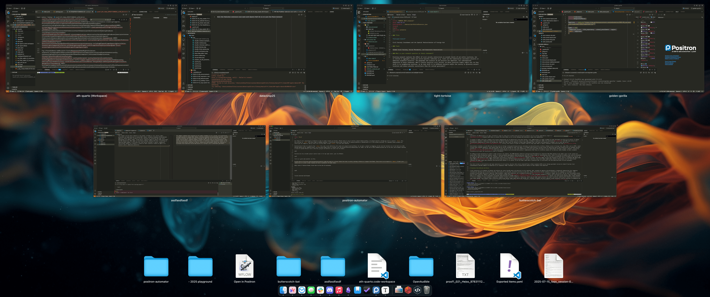
Positron also has a helpful project switcher menu in the top right corner, just like RStudio:
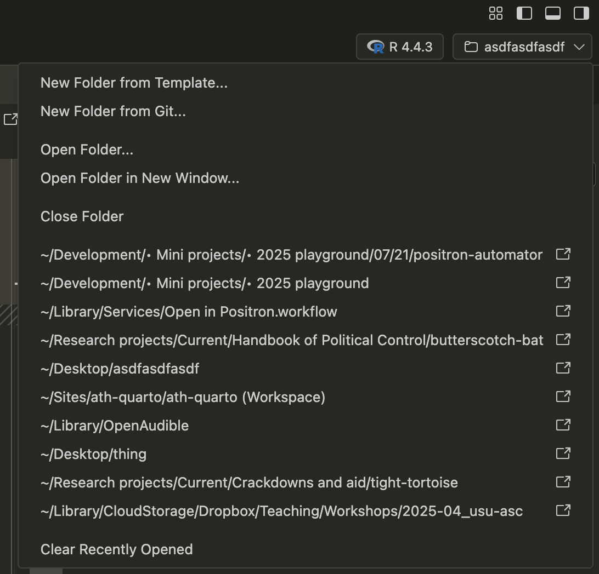
You can also use ctrl+r in Positron to see a list of recently opened projects/folders:
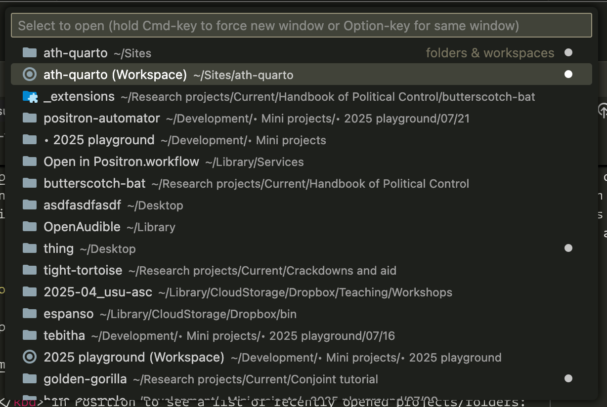
That’s all great and wonderful and fine.
Quickly opening folders in Positron
My main source of friction with Positron-based projects (and this applies to Visual Studio Code too) is quickly opening a folder as a project from Finder. Since there’s no concept of an Rproj, I can’t just double click on a file to open Positron and have it pointed at the right place. I have to drag it down to the Dock.
Well, kind of. Positron has a few recommended ways to speed up the folder opening process.
Workspaces
Positron/Visual Studio Code has the idea of workspaces. You can save a folder (or a collection of folders) as a workspace to store extra project-specific settings. The Positron documentation has more details about this too.
These are a little weird compared to Rproj files. An Rproj file is a plain text file that contains project-specific settings and directs RStudio to set the working directory to its location. With Positron/Visual Studio Code workspaces, the project-specific settings are stored in .vscode/settings.json, but there’s nothing to tell Positron to open a project. The closest analogue is to go to File > Save Workspace As… in Positron and save a <project-name>.code-workspace file. This is technically called a “Multi-root workspace” and allows you to include multiple folders in the same workspace, but it also works for a single folder. I do this for my website here—I have an ath-quarto.Rproj file for opening this project in RStudio and an ath-quarto.code-workspace file that I can double click on to open the project in Positron:
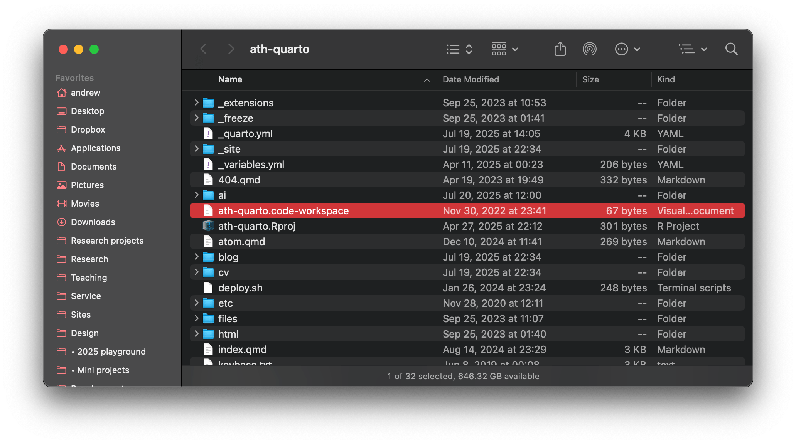
code-workspace fileThe one downside to this is that Positron treats multi-root workspaces differently visually—it includes an extra “(Workspace)” suffix in the window title, and it displays as a file and not a folder in the recently opened projects area in macOS’s Mission Control:
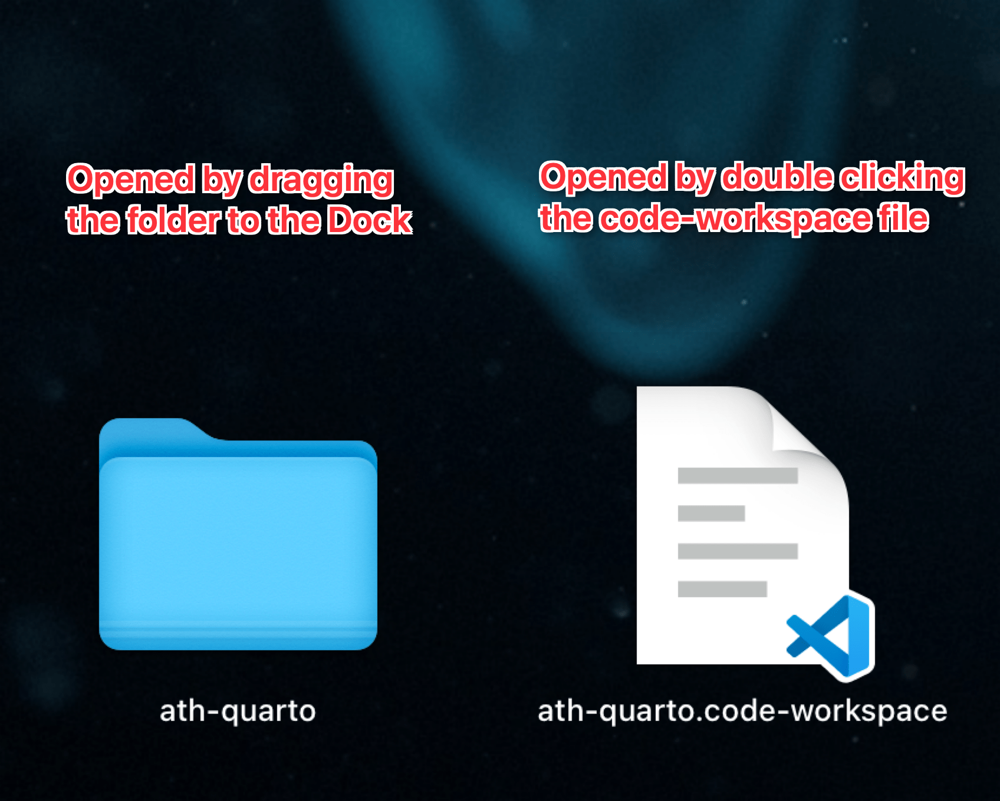
Using multi-root workspaces for single-directory projects works fine—it’s just a little annoying to have these weirdly superpowered workspaces that get treated specially. But it’s also convenient if you want to have a file that you can open like an Rproj. I actually have a little folder in my Dock that lets me open my website either in RStudio or in Positron, which is only possible because of the code-workspace file:
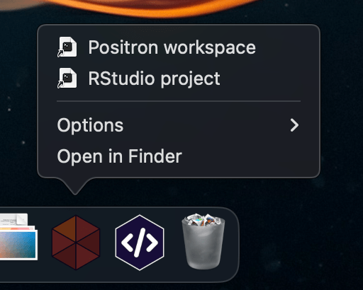
Rproj file and a code-workspace fileProject Manager + Raycast
Another alternative that Positron recommends is to use the Project Manager extension in conjunction with Raycast (see here for more). This is super neat—once you set it up, you can add a keyboard shortcut in Raycast to open a list of all your saved projects. For me, I can mash ⌘⌥^⇧P and open any of the projects that I’ve configured in Project Manager:1
1 Though note here that the saved code-workspace projects like “ath-quarto” and “2025 playground” get different icons, and macOS has weirdly decided to show those as Skype files???—yet another minorly annoying downside to the multi-root code-workspace approach.
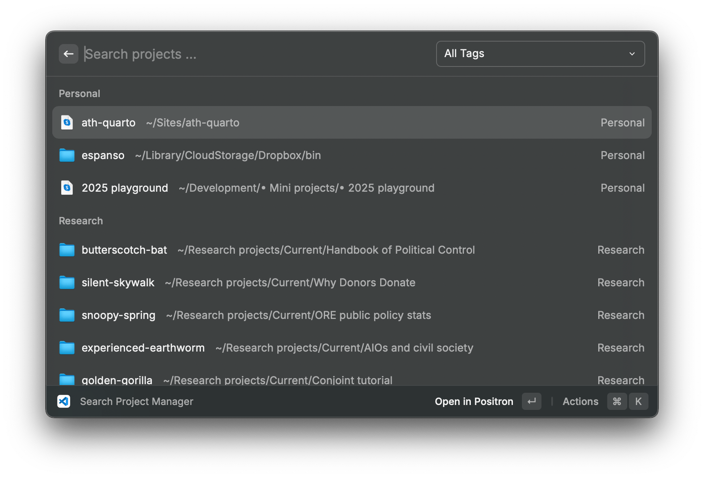
The one downside to this is that I have to remember to manually add a project to the Project Manager extension, which is extra friction and something I always forget to do.
Open a folder in Positron macOS Quick Actions
On Windows, the Positron installer provides an option to add an “Open with Positron” action to the Windows Explorer directory context menu so that when you right click on a folder, it gives an option to open the folder in Positron. That’s neat and easy.
macOS doesn’t have the exact equivalent and restricts what can be added to the right click context menu. But you can actually add special automated workflows as something called either Services or Quick Actions to Finder’s right click context menu.
Services have been part of macOS for a long time. They can be made with Automator, or incorporated directly in applications. Quick Actions are newer (though they’ve been around since at least Mojave in 2018) and are incorporated directly in Finder. I think they can only be made through Automator(??), though maybe applications can provide them directly as well(????)
It’s fairly straightforward to create your own Quick Action workflow:
- Open Automator. It’s already installed on your computer; everybody always forgets this exists.
- Go to File > New and select “Quick Action”
- Create a workflow with all these settings (a screenshot of the finished workflow is included below):
Set “Workflow receives current” to “folders” in Finder2
Drag the “Run Shell Script” action from the Actions Library to the workflow
Set “Pass input” to “as arguments”
Paste this script into the script area:
for f in "$@" do open -a "Positron" "$f" done
- Save it as “Open in Positron” (or whatever else you want)
2 You could also set this to “files or folders” to add the Quick Action to all files too, but I find this excessive.
Here’s what the final thing should look like:
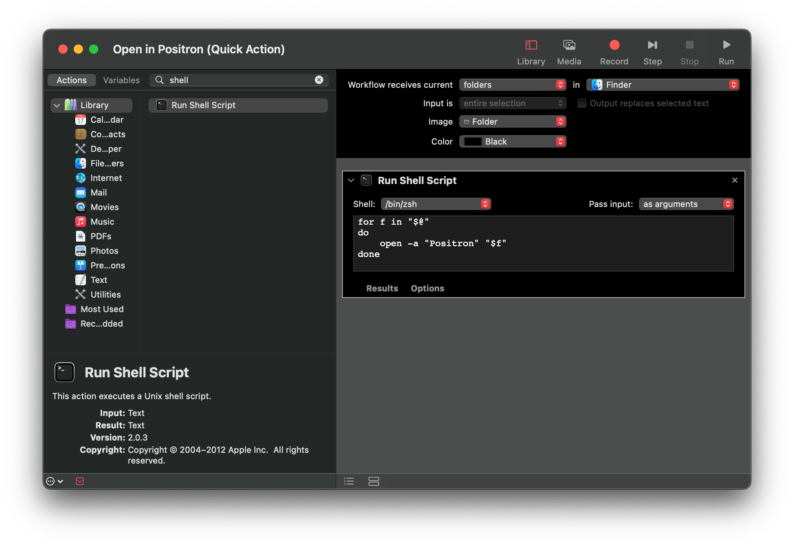
Once you’ve saved the workflow, it will live at ~/Library/Services/Open in Positron.workflow.
Now when you right click on a folder in Finder, you can go to Quick Actions > Open in Positron and the folder will open in Positron as a project!
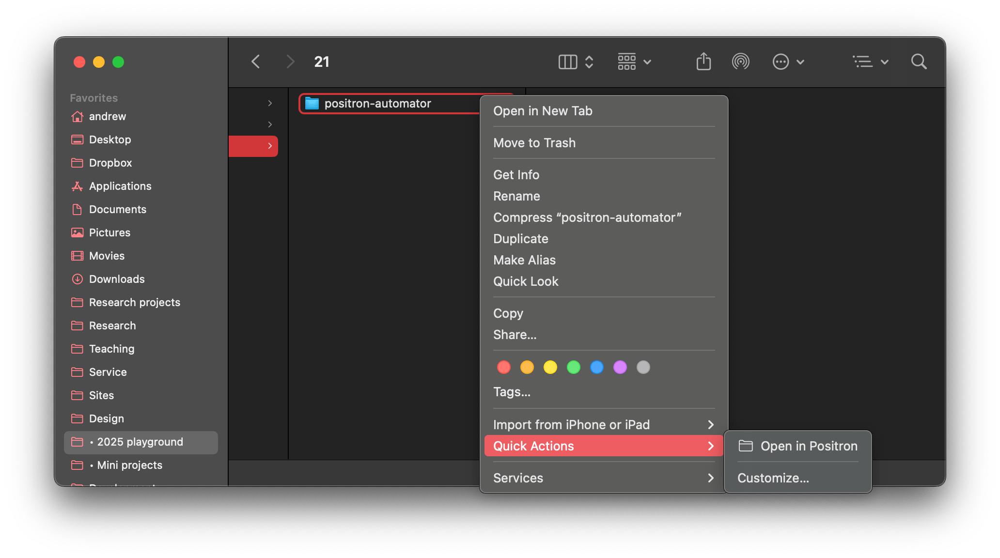
If you use the Gallery View in Finder (I never do—Column View forever), you’ll also get a neat little “Open in Positron” button when you look at the details of a folder:
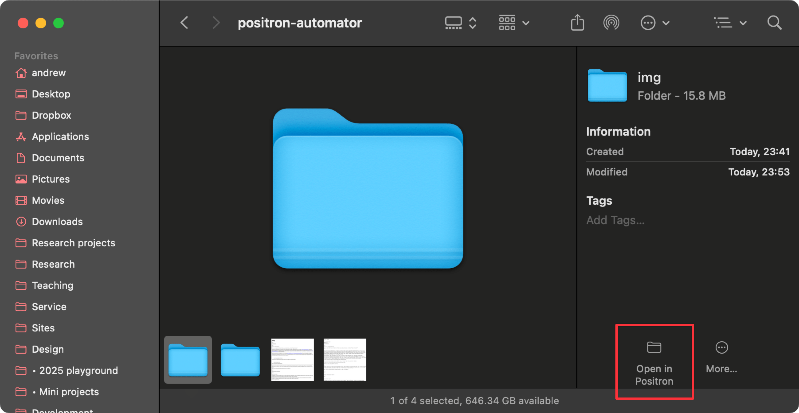
This is so helpful! It stinks that “Open in Positron” is buried under one extra level of menus (Quick Actions), but having the ability to open a project from Finder without needing to drag things to the Dock is really great.
Making this native?
Theoretically, I think this extra Service/Quick Action thing could be bundled into Positron itself. Lots of macOS apps add stuff to the Service menu. Like, I can open a new iTerm2 tab to this folder, or open the folder in DiffMerge, or encrypt/decrypt files with OpenPGP. Those options are all available because I have iTerm2, DiffMerge, and GPG Suite installed.
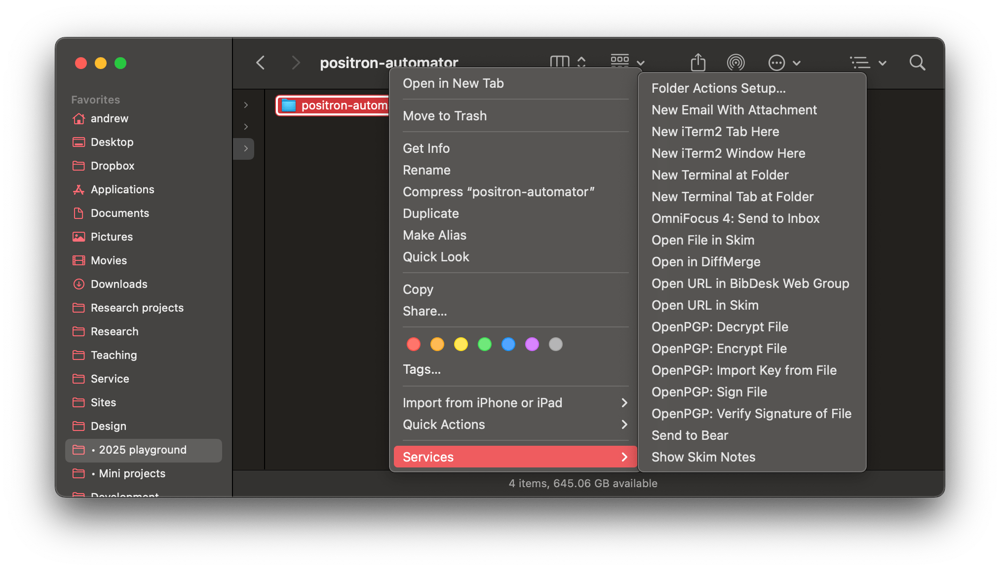
These services are defined in each app’s respective <App Name>.app/Contents/Info.plist file (see Apple’s official documentation here, or this example). For instance, DiffMerge has this entry in its Info.plist:
Info.plist
<!-- This gets us on the "Finder | Services ->" menu in the -->
<!-- "Files and Folders" group. It also gets us at the -->
<!-- bottom Finder's context menu when you right-click on -->
<!-- one or more items. -->
<!-- I'm using NSSendTypes rather than NSSendFileTypes -->
<!-- so that we get directories and so that we appear with -->
<!-- "Files and Folders" rather than with "Text" grouping. -->
<key>NSServices</key>
<array>
<dict>
<key>NSMenuItem</key>
<dict>
<key>default</key>
<string>Open in DiffMerge</string>
</dict>
<key>NSMessage</key>
<string>openFilesViaService</string>
<key>NSUserData</key>
<string>SGDM</string>
<key>NSPortName</key>
<string>DiffMerge</string>
<key>NSRequiredContext</key>
<dict>
<key>NSTextContent</key>
<string>FilePath</string>
</dict>
<key>NSSendTypes</key>
<array>
<string>NSFilenamesPboardType</string>
</array>
<key>NSReturnTypes</key>
<array/>
</dict>
</array>BUT I don’t know anything about official macOS development and how to create plist files like this. Theoretically it’s possible though!
Citation
@online{ginatta2025,
author = {Ginatta, Paolo},
title = {How to Open a Folder as a {Positron} Project with {macOS}
{Quick} {Actions}},
date = {2025-07-22},
url = {https://peginatta.github.io/paologinatta-quarto/blog/2025/02/22/positron-open-with-finder/},
doi = {10.59350/pt66c-57w73},
langid = {en}
}